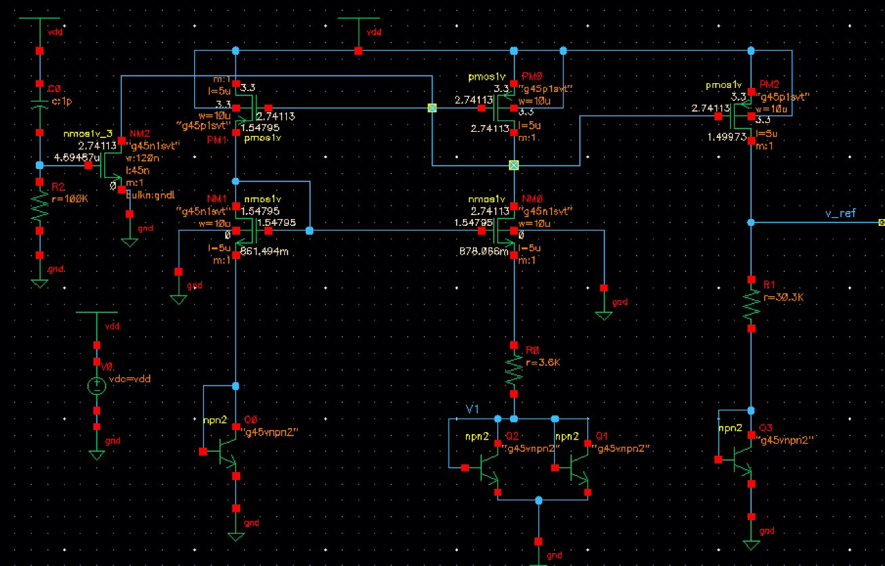
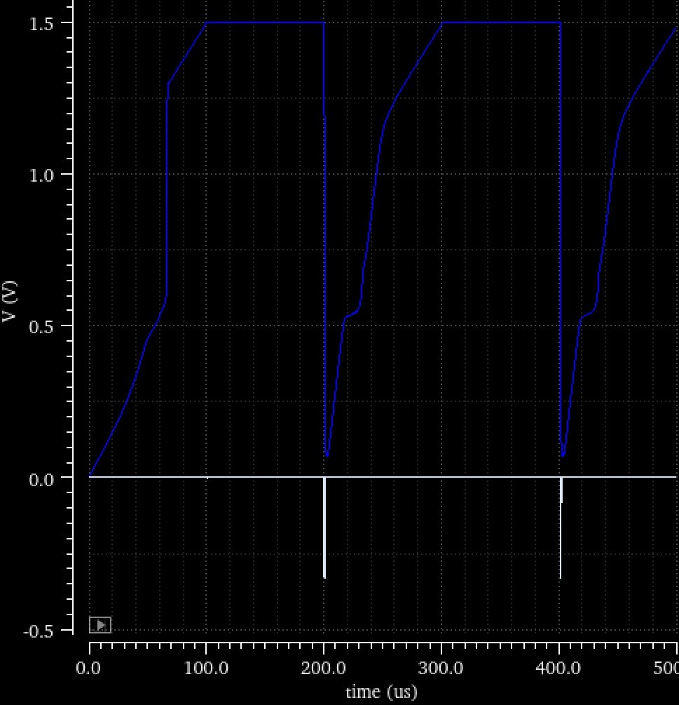
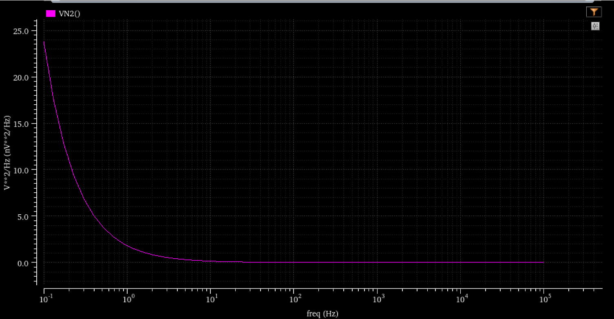

A stable on-chip reference
I independently designed and simulated a bandgap reference in Cadence Virtuoso/Spectre as part of Purdue SoCET’s analog and mixed-signal work. The design combines the complementary temperature dependence of VBE and ΔVBE to produce an approximately 1.5 V reference.
The design uses a bandgap core, an amplifier and resistor network, current mirrors, and a startup circuit. The presentation documents the schematic-level implementation and simulation results. There is no completed layout or post-layout result for this project.

My contribution
I combined circuit calculations with simulation to choose component ratios and device sizes, establish the intended DC operating point, and examine the reference’s behavior across temperature and startup conditions.
- Temperature compensation: balancing the PTAT and CTAT contributions through the circuit’s resistor and device ratios.
- Startup analysis: checking that the reference reaches its operating point, including a slow supply-ramp case.
- Noise analysis: examining output-noise spectral density and transient-noise behavior in simulation.
Schematic-level results
The nominal temperature sweep gives a reference-voltage range of 1.49835–1.49975 V over −40 to 125 °C, corresponding to an approximate 5.7 ppm/°C temperature coefficient. The presentation also reports about 5.7–7.1 ppm/°C across its evaluated supply/temperature conditions, using supplies of 2.7, 3.0, and 3.3 V.

The startup simulations include repeated power cycles and a 100 µs supply rise time. The reference reaches approximately 1.5 V in the illustrated slow-ramp case. Noise simulations are also included in the original presentation.

Output-noise behavior

Temperature compensation, startup, and noise probe different aspects of reference behavior. This spectrum adds the frequency-domain check; a band-limited RMS noise value would require integration over a specified bandwidth and is not inferred here.
Design presentation
View the bandgap design presentation on GitHub ↗
The presentation acknowledges Seyedehmarzieh Rouhani, Mark C. Johnson, and the Purdue SoCET team.